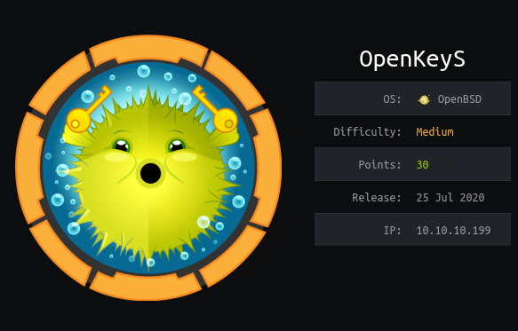
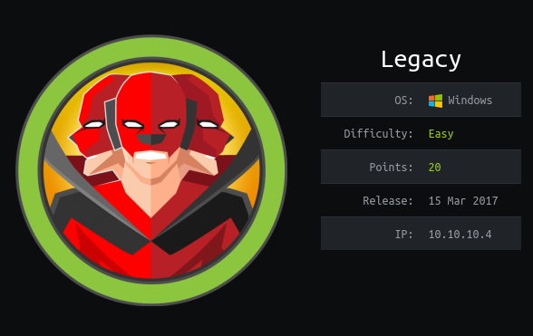

Hello, I am Jonathan Vargas
I am a senior undergraduate student at the University of Texas at San Antonio studying Cyber Security and Information Systems. I am enthusiastic about hardening operating systems and network security and strive to lead the next generation of cyber security professionals. My motivation to build strong, secure networks derives from a robust desire to ensure our private data remains private.
Throughout this site, you will find various articles I have authored involving penetration testing methodologies and write ups for vulnerable machines on Hack The Box and Try Hack Me. For further information on my academic and professional achievements, please review my resume with the button below.
CTF | Writeup | Try Hack Me | sudoedit | symbolic link
Explore the repurcussions of having a password hint, automating the creation of a custom password list using Python, brute forcing a login page with OWASP ZAP, pivoting between three different users on the system, and exploiting a sudoedit wildcard path vulnerability using a symbolic link attack.
CTF | Methodologies | Redis | Databases | Try Hack Me
Res is a Try Hack Me room serving as a surface level introduction to pentesting the Redis database management system. Redis is a free, open-sourced, DBMS that provides data storage for processes, applications, and servers with an in-memory data structure. In this writeup, we will be exploring how to pentest a remote Redis instance with unauthenticated login enabled: the cause of server exploitation.
CVE | CTF | OpenBSD | Port 80 | SSH Keys | Cookies

Insecure cookies and out-of-date operating systems make for a scary combination when it comes to preventing your site from data breaches and takeovers. In this POC report, we will prove a vulnerability that exists in the OpenBSD kernel version 6.6 for httpd services.
OSINT | Maps | Packet Analysis | Privacy

For every Google account created, several identification numbers and aliases are tied to that account and will be used as a pointer for most ensuing Google HTTP posts and requests.
RCE | Windows XP | SMB | Nmap | Dir Busting | CVE

This proof of concept (POC) report demonstrates why maintaining a data-sharing server on an outdated operating system is the technological equivalent of hiding your house keys under the doormat. Here is why it is vital for IT managers to implement automated patch update policies to hosting data on compromised systems.

Donec eget ex magna. Interdum et malesuada fames ac ante ipsum primis in faucibus. Pellentesque venenatis dolor imperdiet dolor mattis sagittis magna etiam.